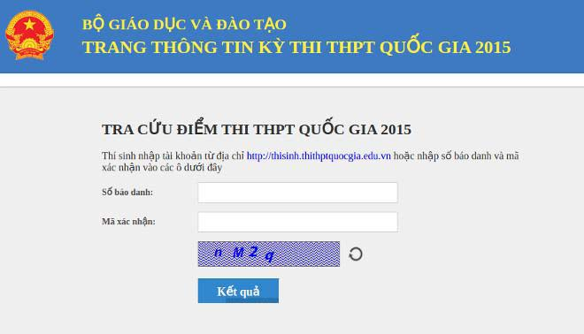

Tra cứu điểm thi THPT Quốc gia năm 2015

Lần cập nhật cuối lúc Thứ tư, 22 Tháng 7 2015 15:20 Viết bởi Administrator Thứ tư, 22 Tháng 7 2015 15:14
Thí sinh đã có thể tra cứu điểm thi THPT 2015. Bộ Giáo dục và Đào tạo vừa có công văn cho biết điểm thi THPT quốc gia trên trang web của Bộ. Ngoài ra, thí sinh cũng có thể tra cứu điểm thi tại đây.

Thông báo mới nhất từ Bộ GDĐT cho hay, thí sinh đã có thể tra cứu điểm thi từ 14h30 ngày hôm nay, 22/7
Bộ Giáo dục cũng đã thông báo không cung cấp dữ liệu điểm thi cho các nhà mạng. Vì vậy, thí sinh không nên gửi các tin nhắn cho nhà mạng di động để xem điểm thi.
Ngoài ra, Bộ GD&ĐT cũng cho biết, thí sinh cũng có thể tra cứu kết quả thi tại các trang mạng sau:
Đại học Thái Nguyên (địa chỉ http://tuyensinh.tnu.edu.vn): Dành cho thí sinh thuộc các tỉnh Hà Giang, Cao Bằng, Lai Châu, Lào Cai, Tuyên Quang, Lạng Sơn, Bắc Cạn, Thái Nguyên, Yên Bái, Sơn La, Phú Thọ, Vĩnh Phúc, Quảng Ninh, Bắc Giang, Điện Biên.
Đại học Bách Khoa Hà Nội (http://thi.hust.edu.vn) và Đại học Sư phạm Hà Nội (http://thpt2015.hnue.edu.vn): Dành cho thí sinh thuộc các tỉnh, thành phố Hà Nội, Hải Phòng, Bắc Ninh, Hải Dương, Hưng Yên, Hoà Bình, Hà Nam, Nam Định, Thái Bình.
Đại học Vinh (diemthi.vinhuni.edu.vn): Dành cho thí sinh thuộc các tỉnh: Ninh Bình, Thanh Hoá, Nghệ An, Hà Tĩnh, Quảng Bình, Quảng Trị.
Đại học Đà Nẵng (http://thi.ud.edu.vn): Dành cho thí sinh thuộc các tỉnh, thành phố: Đà Nẵng, Thừa Thiên -Huế, Quảng Nam, Quảng Ngãi, Kon Tum, Bình Định, Gia Lai, Phú Yên, Đắk Lắk, Khánh Hoà, Lâm Đồng, Bình Phước, Đắk Nông.
Đại học Nông Lâm TPHCM (http://ts.hcmuaf.edu.vn) và Đại học Sư phạm TPHCM (http://tuyensinh.hcmup.edu.vn): Dành cho thí sinh thuộc TP HCM, Bình Dương, Ninh Thuận, Tây Ninh, Bình Thuận, Đồng Nai, Long An, Bà Rịa-Vũng Tàu.
Đại học Cần Thơ (http://thidbscl.ctu.edu.vn): Dành cho thí sinh thuộc các tỉnh, thành phố: Đồng Tháp, An Giang, Tiền Giang, Kiên Giang, Cần Thơ, Bến Tre, Vĩnh Long, Trà Vinh, Sóc Trăng, Bạc Liêu, Cà Mau, Hậu Giang.
Trước việc thí sinh lo ngại trang web tra cứu điểm thi THPT quốc gia tắc nghẽn vì đông người truy cập, ông Mai Văn Trinh – Cục trưởng Cục Khảo thí và Kiểm định Chất lượng Giáo dục (Bộ GD&ĐT) cho biết, khi xây dựng cổng thông tin, đã tính toán để đảm bảo thông suốt.
Ông Trinh dự đoán, thí sinh sẽ truy cập điểm thi nhiều trong 3 ngày đầu tiên. Chúng tôi không dám chắc sẽ thông suốt 24/24 giờ của cả quá trình mà không tắc nghẽn, nhưng chúng tôi đảm bảo cho thí sinh tra cứu thuận lợi, không gặp khó khăn, ông Trinh nói.
Lưu ý sau khi có điểm thi THPT quốc gia
Năm nay, cả nước có 1.004.486 thí sinh dự thi THPT quốc gia. Trong đó, 28% thí sinh chỉ thi với mục đích xét tốt nghiệp, số còn lại mong muốn vào đại học, cao đẳng.
Trước ngày 27/7, các Sở GD&ĐT hoàn thành xét công nhận tốt nghiệp THPT, cấp giấy chứng nhận tốt nghiệp tạm thời.
Các sở GD&ĐT nhận đơn phúc khảo trong 10 ngày kể từ ngày công bố điểm thi và chuyển dữ liệu thí sinh xin phúc khảo bài thi đến Hội đồng thi. Mọi thí sinh đều có quyền xin phúc khảo bài thi và phải nộp lệ phí phúc khảo theo quy định.
Xét tuyển nguyện vọng 1: Từ ngày 1/8 đến 20/8, kéo dài 20 ngày.
Các nguyện vọng bổ sung:
- Đợt một nhận hồ sơ từ 25/8 đến 15/9, công bố điểm chuẩn trước 20/9.
- Đợt hai nhận hồ sơ từ 20/9 đến 5/10, công bố điểm chuẩn trước 10/10.
- Đợt ba nhận hồ sơ từ 10/10 đến 25/10, công bố điểm trúng tuyển trước 31/10.
itnbk.edu.vn- Đợt bốn nhận hồ sơ từ 31/10 đến 15/11, công bố điểm trúng tuyển trước 20/11.
Tin mới hơn:
- 01/08/2016 12:45 - Hướng dẫn thí sinh đăng ký xét tuyển trực tuyến Đạ…
- 29/07/2016 15:27 - Bộ giáo dục và đào tạo công báo điểm sàn Đại học n…
- 14/04/2016 07:45 - Cẩn trọng khi đăng ký dự thi để tránh rớt oan chế …
- 16/03/2016 16:09 - Chỉ tiêu tuyển sinh vào 21 trường quân đội năm 201…
- 08/10/2015 00:00 - Gameshow truyền hình: Học trò xứ Quảng của QRT thắ…
- itnbk.edu.vn
- 02/04/2015 10:22 - Bộ Giáo dục công bố đề thi minh họa kỳ thi THPT qu…
- 27/02/2015 00:00 - 10 điểm nổi bật của quy chế kỳ thi THPT quốc gia
- 03/02/2015 07:03 - Băn khoăn với đổi mới giáo dục
- 31/01/2015 07:37 - Thứ trưởng Bộ GD-ĐT Nguyễn Vinh Hiển làm việ…
- 26/01/2015 16:59 - Bộ trưởng Bộ GĐ-ĐT chốt 10 điểm về kỳ thi quốc gia